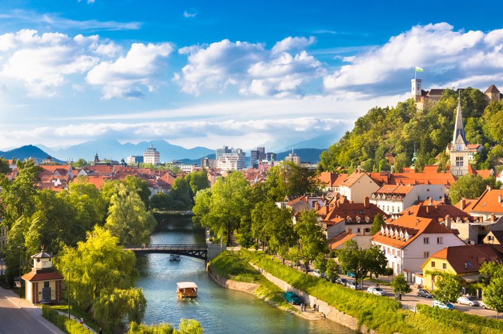

Vacanță în Ljublijana, Slovenia
Dacă te numeri printre cei care privesc cu scepticism turistic fostele orașe comuniste, dă-i dreptul Ljubljanei să te convingă de contrariu. Vei descoperi o capitală neașteptat de relaxantă și primitoare, plină de statui care înfățișează dragoni
(unul dintre simbolurile naționale) sau oameni contopiți cu natura (oameni marini, în general). Orașul mustește de tineri, de clădiri în culori pastelate, de piețe colorate, iar centrul acestuia poate fi locul pentru întâlnirea de duminică
dimineața a stăpânilor de câini de aceeași rasă. Da, Ljubljana este locul ideal pentru o vacanță cu familia în mijlocul unei comunități unite, relaxate, fericite, ca o poezie de Alecsandri.
